Streamlining notetaking through generative AI diagrams
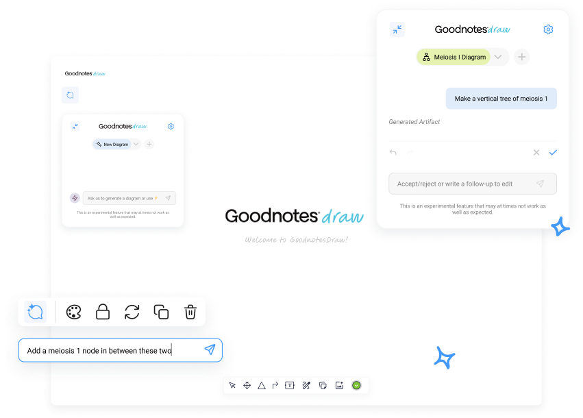
Students today spend hundreds of hours polishing their notes and hand-drawing diagrams. This is slow and tedious and prevents students from being more efficient in their learning process.
Goodnotes is a leading digital note-taking app designed to transform handwritten notes into powerful, searchable documents. Popular among students, educators, and professionals, Goodnotes bridges the gap between analog and digital productivity.
I designed various chatbot interactions and interfaces, following industry-standard AI design patterns, to create a AI-powered diagram generator. Based off of user research and client feedback, I reduced average time-on-task by 75% for diagram creation.
RESEARCH
Goodnotes’ platform is primarily used for studying and note-taking. making our user demographic college students and everyday note-takers. I analyzed findings from 40 survey responses and 3 user-interviews to understand how users take their notes, create diagrams, and their behaviors and interactions with AI-powered tools. From this, I outlined three main ideas:
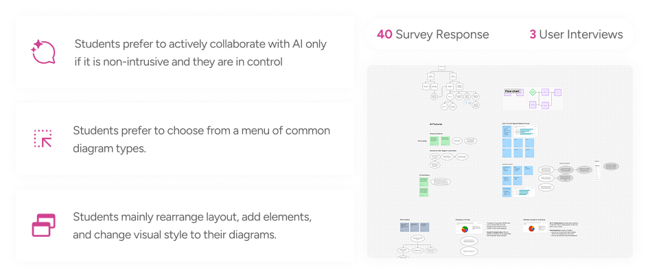
We examined other AI diagram applications to see if their products had qualities that our users were asking for. We discovered that most competitors were successful in creating a non-invasive experience, but struggled with feedback and flexibility.
DEFINE
I determined the three key goals to help guide our design process. Control, Flexibility, and Feedback were some of the most requested and discussed topics throughout our research. I used these goals to determine our problem statement.
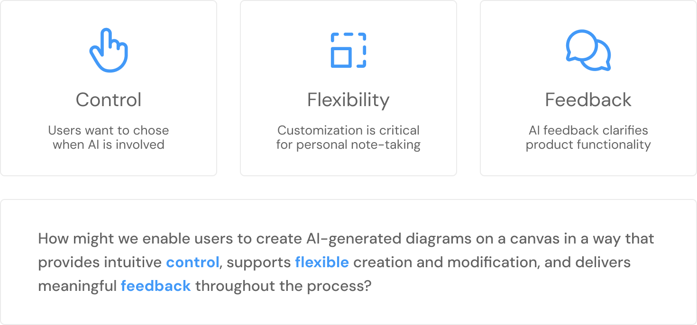
To further define the scope of this product, I mapped out a user flow to see the decision points, screens, and actions a user might take in the diagram generating process.
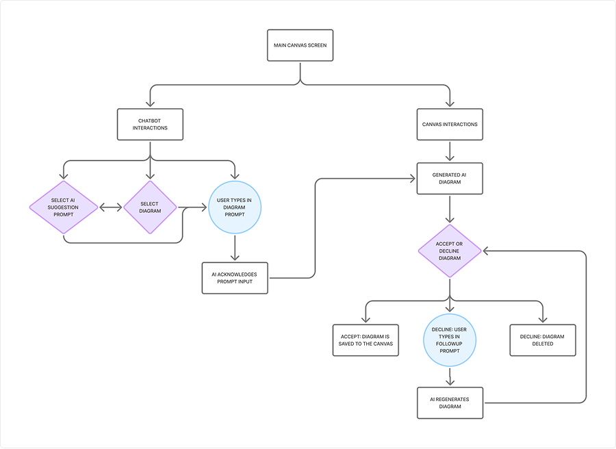
IDEATE
From our research, users were weary of the AI overstepping it’s boundaries while they took notes. Users felt that a conversational AI was unnecessary in the diagram-making process, since users wanted to work independently, without the presence of an AI personality.
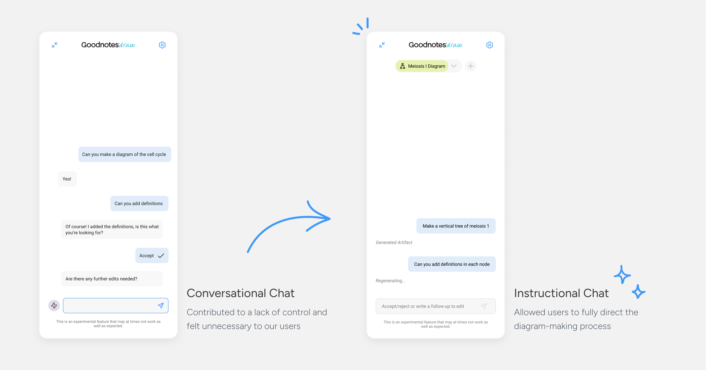
Our client requested an accept and reject function where users are able to chose to keep content generated by AI. Our solution took multiple iterations where I created a minimalistic design using key iconography. For additional affordance, the message box provides instructions.
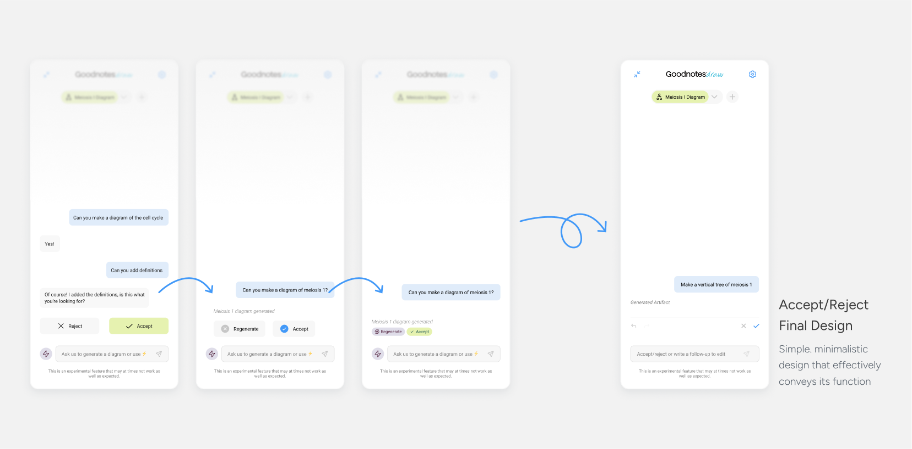
Users want to be in control of their work and fully flexibility of their workspace. To solve this, we opted for both expanded and condensed chat interfaces that can be freely moved across the canvas.
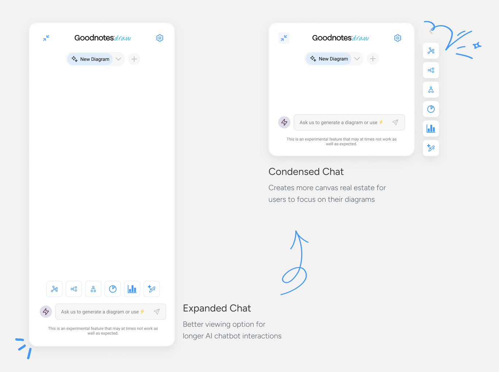
FINAL PROTOTYPE
Users can freely move the sidebar chatbot to fit their workspace needs, in addition to minimizing and condensing to allot for greater canvas real estate. There are several diagram presets to chose from and a drop-down menu to navigate to any previously generated diagram.
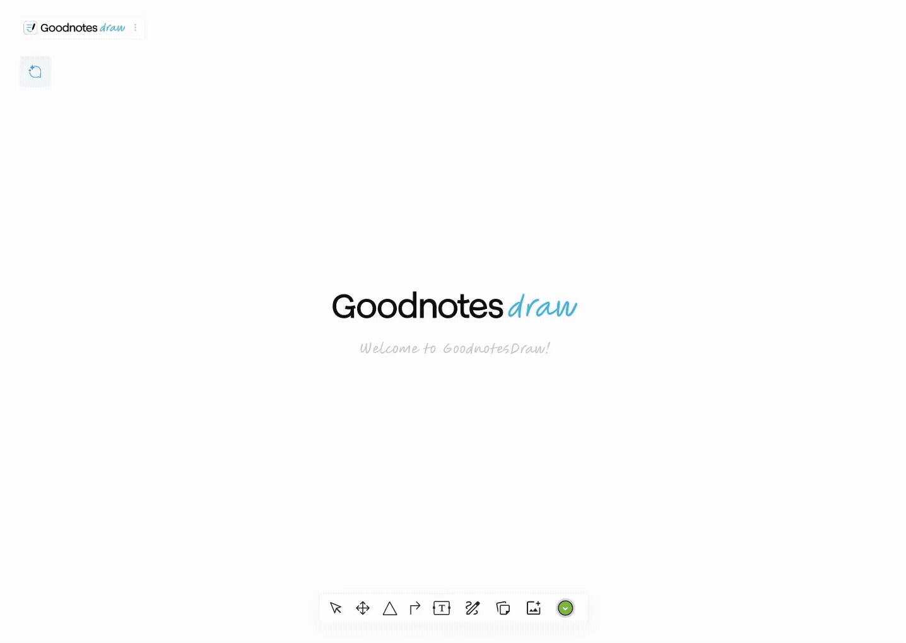
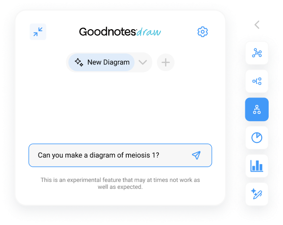
By using the sidebar chatbot, users can communicate to the AI the parameters of their desired diagram.
To make further edits to a generated diagram, users can send follow-up messages to get the perfect diagram for their notes, even after the diagram has been accepted.
Standard Prompt Flow
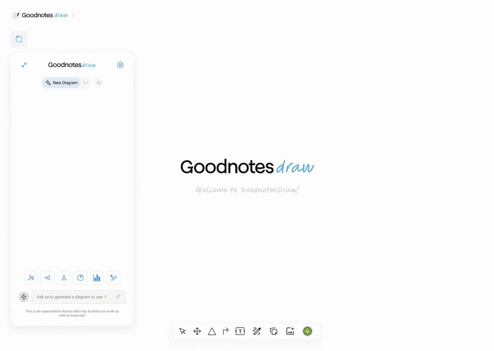
Follow-Up Flow
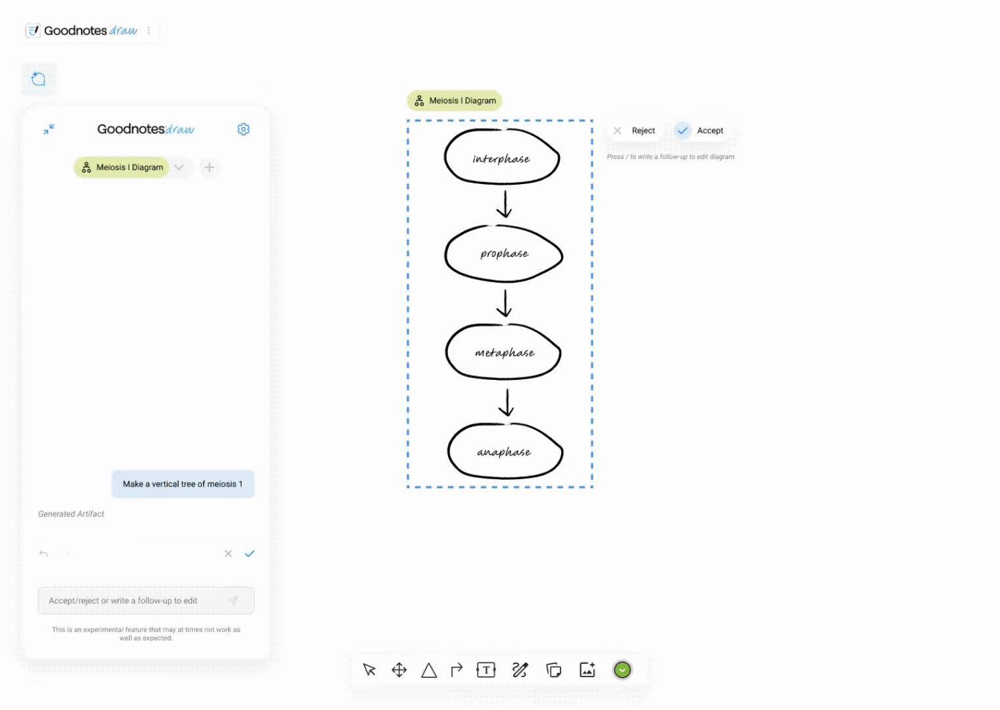
Users can accept or reject the AI’s work with a click of a button to keep them in control of the diagram-making process. The chatbot will keep records of the user’s decision in the chat.
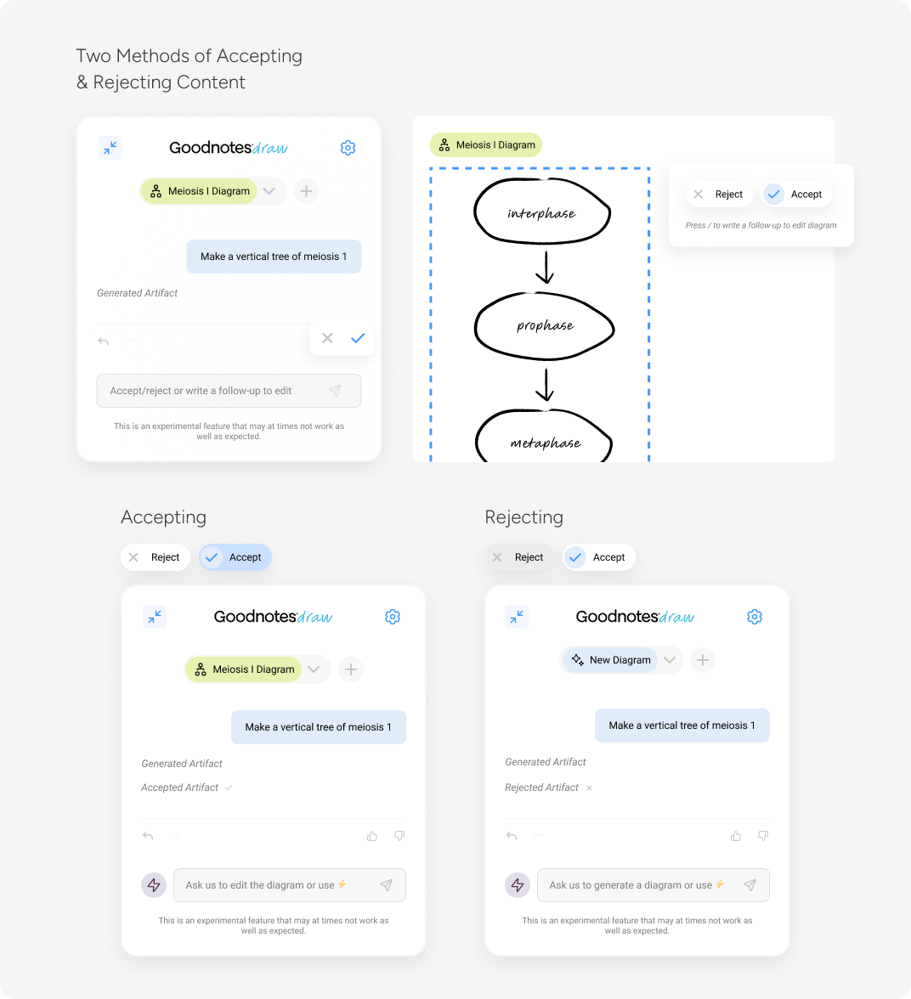
Users can use the Quick Edit tool to swiftly modify specific elements within a diagram without having to restart their work by creating a new diagram.
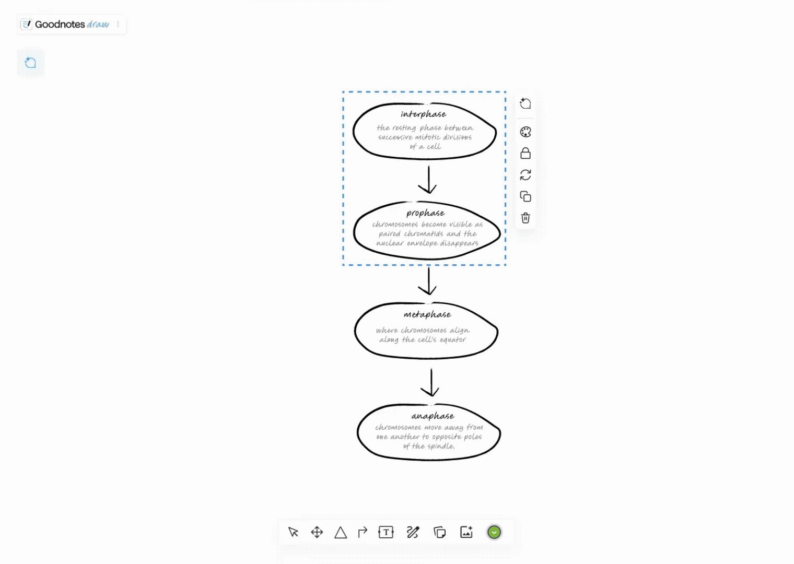
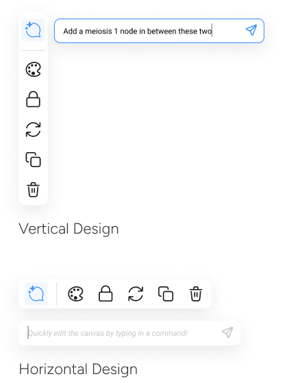
Users can access AI Suggestions through a button click to see a list of prompts to guide their diagram-making. It is optional way to help users make quick decisions while being completely non-invasive.
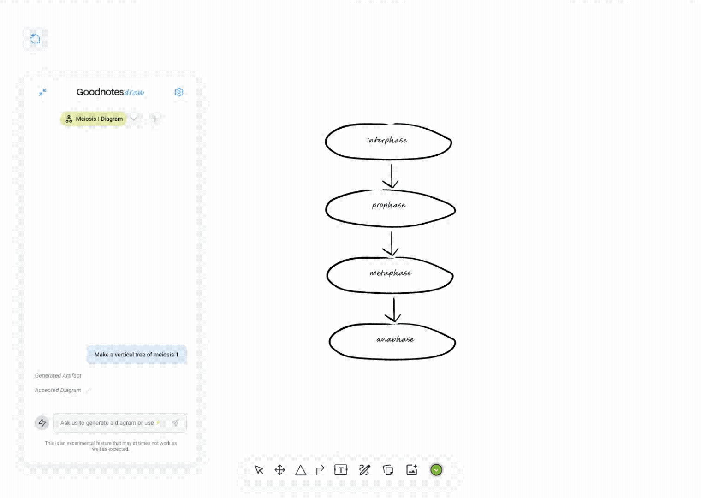
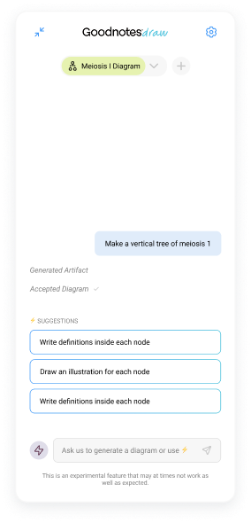
TAKEAWAYS
This product was initiated due to poor experience with another web scraper, making it crucial that our product address the pain points our users felt. Doing so required many meetings, lots of questions and research, and a ton of iterating to fully empathize with our client and meet their needs.
Since this product relied heavily on understanding user behaviors, it was crucial that I kept asking questions to users to ensure I’d be designing based off of their preferences, not just my own. Because although it may be intuitive to me, that doesn’t mean that Goodnotes users would agree with me.